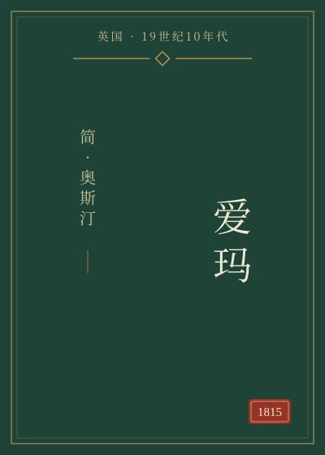
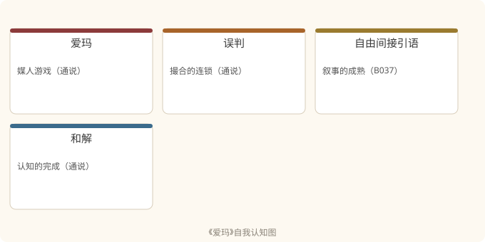

爱玛
一、基本信息
| 作者 | 奥斯汀 |
|---|---|
| 成书/出版 | 1815年（出版年通说待核；Britannica B037：司各特1816年《评论季刊》评《爱玛》） Jane Austen — Encyclopaedia Britannica（百科全书） |
| 国别/地区 | 英国 |
| 时代 | 近代 · 19世纪10年代 |
| 体裁 | 长篇小说 |
| 语言 | 英语 |

《爱玛》自我认知图（主题·结构图）
二、创作背景
Britannica（B037）：司各特1816年《评论季刊》评《爱玛》——奥斯汀严肃批评史的起点脉络之一。
Britannica（B037）：奥斯汀——'自由间接引语、风尚小说奠基'（作者页注记）。
题材（通说待核）：'漂亮、聪明、有钱'的爱玛·伍德豪斯的媒人游戏与自我认知。
三、内容脉络
（通说待核——B037未载剧情）爱玛的撮合游戏与误判。
（通说待核）奈特利先生的批评与和解。
四、主要人物表
| 人物 | 身份 | 说明 |
|---|---|---|
| 爱玛·伍德豪斯 | 女主人公 | （通说待核，B037未载） |
| 奈特利 | 批评者 | （通说待核，B037未载） |
五、主题与艺术特点
- 自由间接引语的成熟实践（B037：作者页注记）。
- 风尚小说（comedy of manners）的延续（B037）。
- 自我认知的喜剧（通说待核）。
六、影响与评论
- Britannica：司各特1816年评论（B037）。
Jane Austen — Encyclopaedia Britannica（百科全书） - Britannica：惠特利1821评论开创严肃批评（B037 交叉）。
Jane Austen — Encyclopaedia Britannica（百科全书）
七、阅读建议
难点
- 摄政时期英国乡绅社会。
- 自由间接引语的辨识。
- 《爱玛》中译本（人民文学/译林等——通说待核）。
- 英文原版（公有领域）。
奥斯汀第三部；与《傲慢与偏见》《劝导》对读。
八、待核实
- 1815年出版（John Murray说）核对。
- 爱玛/奈特利人名核对（B037未载）。
- 司各特评论原文待核。